Semester1
1/19/24 - This is my first update for the second semester! I can sart anew and I'm able to have more shenanigans of the engineering kind. This week, I learned about chemical engineering and experimented with non-Newtonian fluids out in the parking lot. It was fun for sure, but my hands were freezing by the time I took them out of the fluid and let the wind dry my hands. Great class experiment nonetheless, and now I'm making an Arduino car with my friend, so now I need to put electrical and software engineering along with physics and design into a single project.
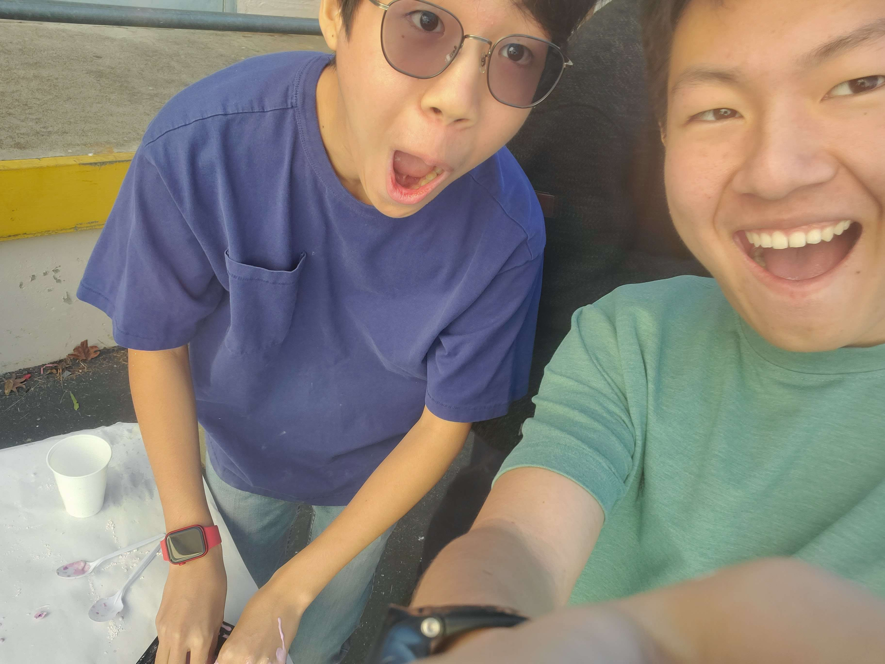
1/26/24 - This is my second update for the second semester! I started a group project with the ultimate Lima, to create an Arduino car! Here's the catch though; we're planning on turning it into a tank! That means we can craete another motor system to operate a NON FUNCTIONING turret with a sensor somewhere inside of it, and control it remotely instead of doing the bare minimum of running code to have it run in a predetermined path. Our design is loosely going to be based on the British prototype TOG 2. That means it will be long and tread-operated. That means we can create a more grippy surface between the tank and the ground, and not have to use CD's as oversized wheels. Now, for next week, Ethan and I have to find a way to get a proper tread system 3D printed, and then we can move on to improving circuitry.
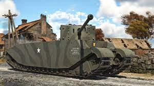
2/5/24 - This is my third update for the second semester! I was able to finish the CAD for my basic tank shell, and Ethan and I found a viable premade CAD file for our tank treads! If the prints go smoothly, the rest of the week can go to refining the Aruino and motor control software, along with drilling holes for the motors to give space for the treads on the outside. Hopefully Ethan can get the printer up and running for the main prints. Even if we have to rush and use the prototype as the final, our design is already refined enough that we can just drill holes for the motors, and a sensor to control the tank remotely. Now for what I did over the weekend is... a good question. I don't know what I did, myself. I called with my friends on Discord for a few hours, and I took a bi-literacy test for Korean at Toll Middle, but otherwise, I slept, called my friends, and feared the rain.
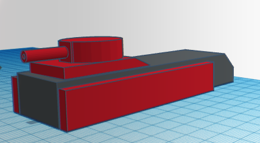
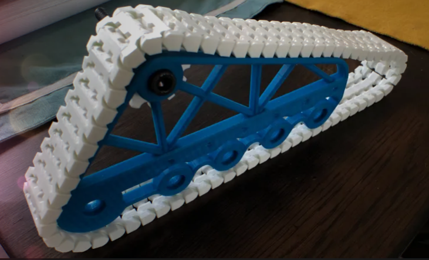
2/13/24 - This is my fourth update for the second semester! The day before Valentine's day, still single, but I do have a 3D printing pen, which will help a lot with repairing any parts that break while Ethan and I build over the week. Not too eventful of a week, since Ethan and I were figuring out how Arduino code worked, and how to get a proper print going. Still need to work on the smaller bits of printing, since the original print is hungolomghononoloughongous
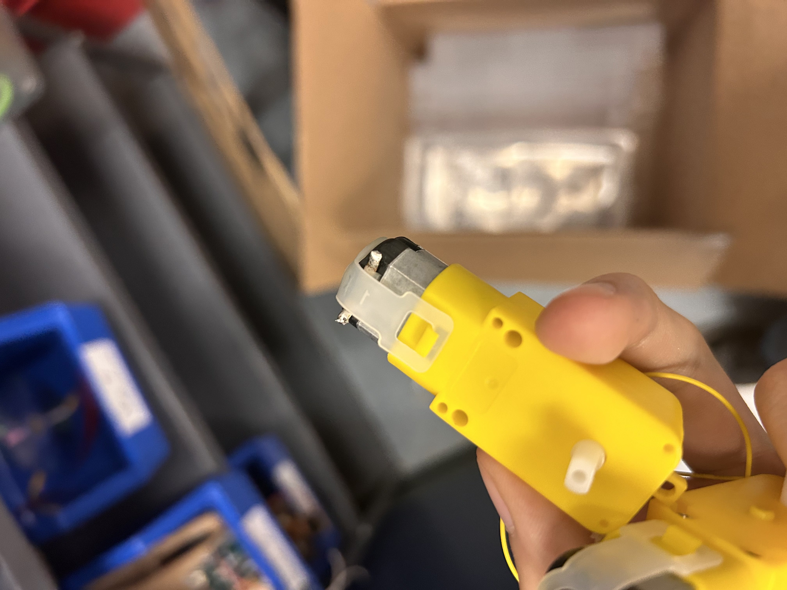
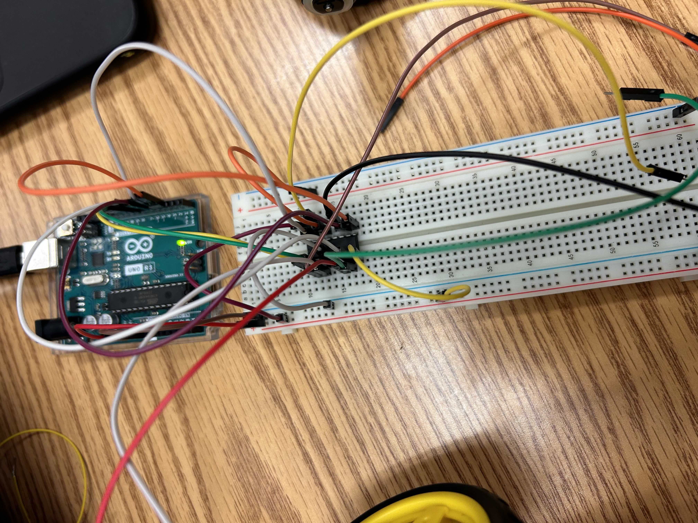
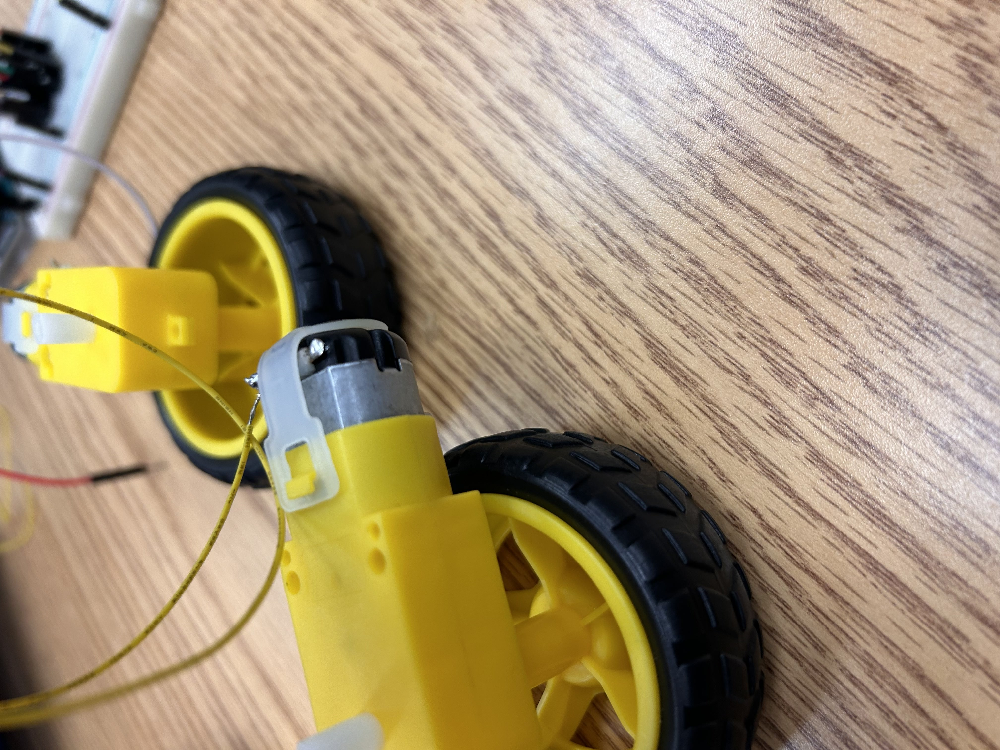
2/26/24 - This is my fifth update for the second semester! The project was horrendously hard to deal with in terms of 3d modeling and coding. Arduino is so new to me, even as I write this update. Ethan Lima still despises Tinkercad, as do I. The treads needed a little bit more help getting traction, and using a long cord to connect the Arduino so we can control it from a foot away like a leash wasn't working due to the code being funky, so we didn't get much distance either. We just went in a loop around a tight circle. That led to the car performing decently in defense in terms of PVP fighting though, so it wasn't all that bad! We couldn't really make a prototype since the process of finding out how to get stubborn old Tinkercad to work and learning how C++ worked was a lengthy challenge, but if Ethan L and I were to make another version, most likely we'd have direct contact between the driving gear and the wheels, because we needed a bit more friction to drive our little contraption. I learned that C++ is extremely different from Java, and Tinkercad needs a revamp in terms of useability for precise models.
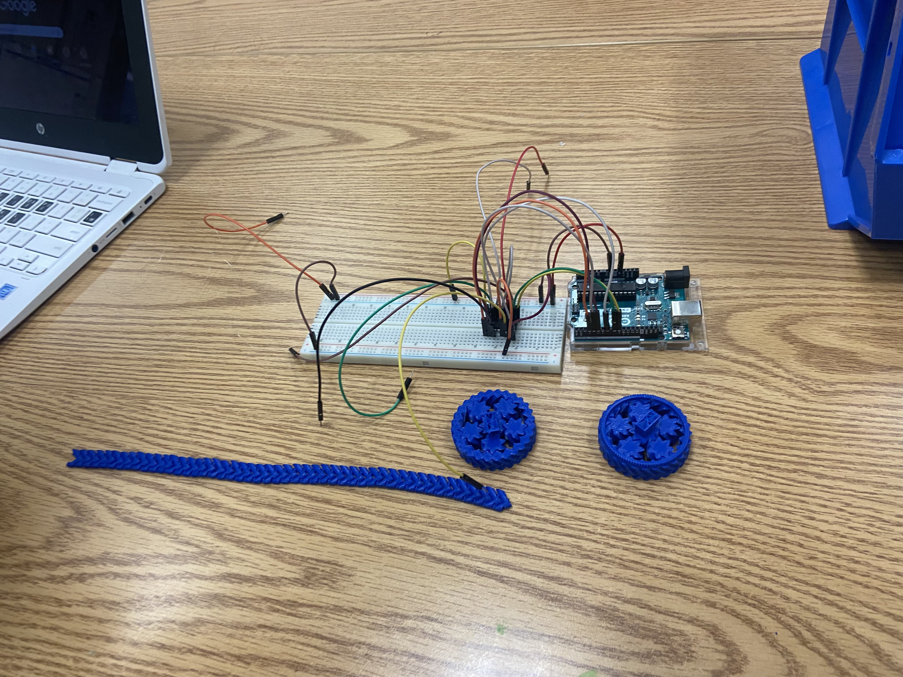
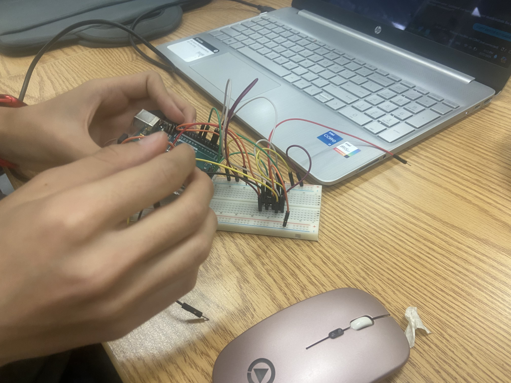
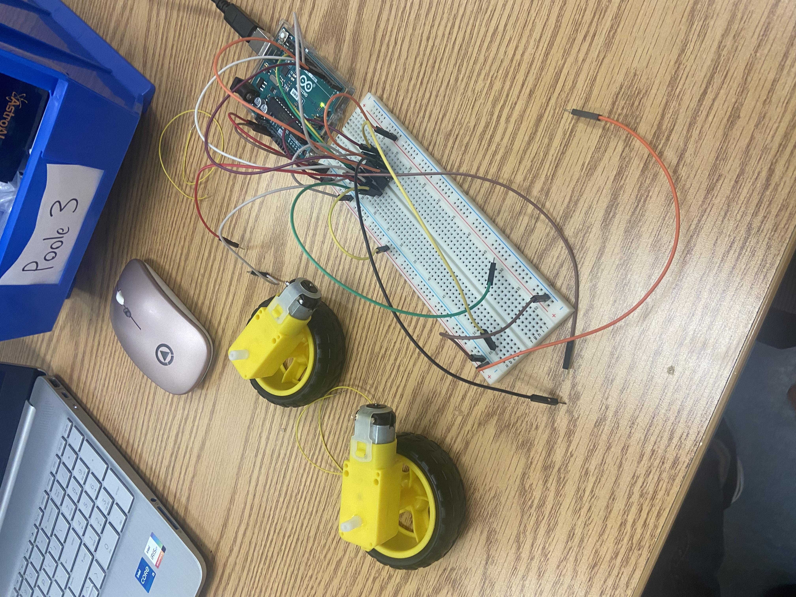
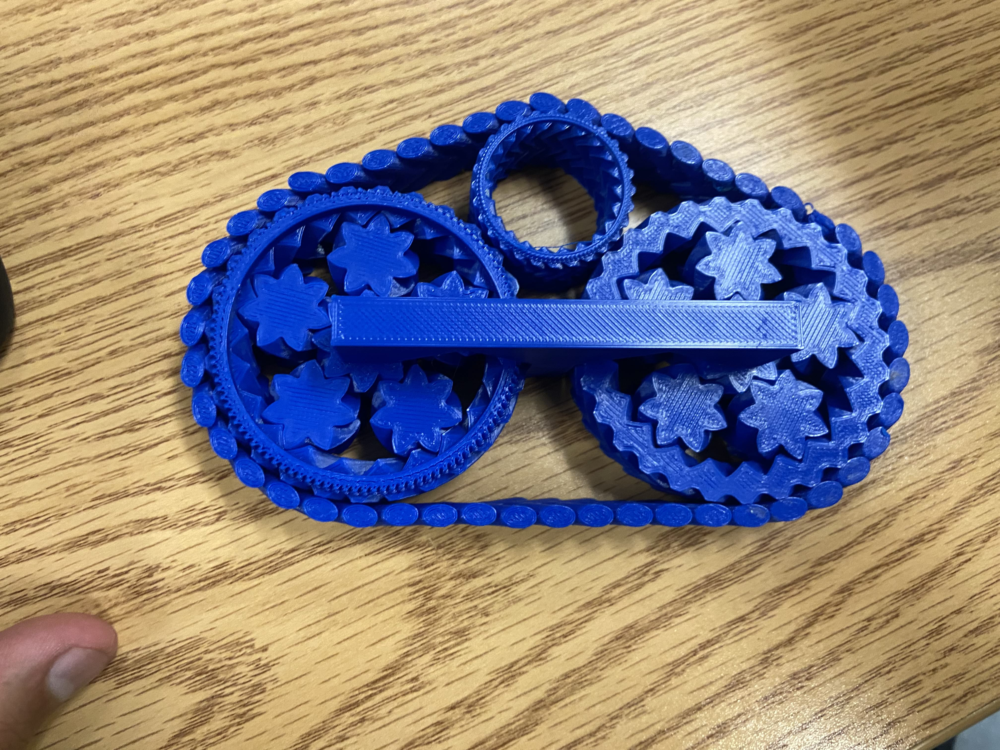
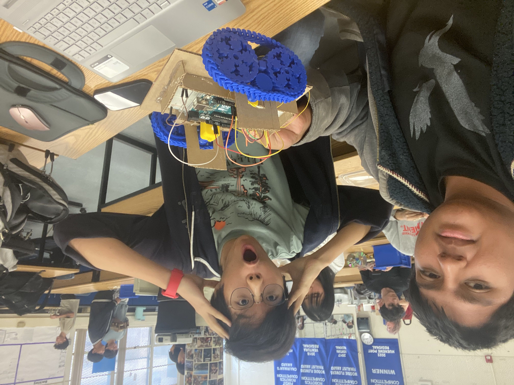
3/4/24 - This is my sixth update for the second semester! We got a new project! And new groups! My new group is nice. They aren't that rowdy which is a relief. We have to replicate an egg drop off of the third floor of the 1000 building. My group is planning to support the egg with straws to hold it in the center, and have cotton and other filling around it to keep it near the center if it falls out. Of course, we need to add two garbage bags as parachutes, and two balloons to try and slow the package down. I feel like using a hole in the garbage bag's center would keep the package upright and slow while it comes down, but I don't know if three floors is enough to see adequate results. If we have a method of reducing forces by having an elastic material such as the balloon around it, it would be optimal since the impulse of the system would be more spread out and therefore less force on the shell of the egg. The weakest part of the build has to be the straw supports of the egg. If that fails, I don't know what will happen. Maybe we can change it and back up our changes with physics, or we change it and hope for the best. Either way, I'm betting my group does well on this project.
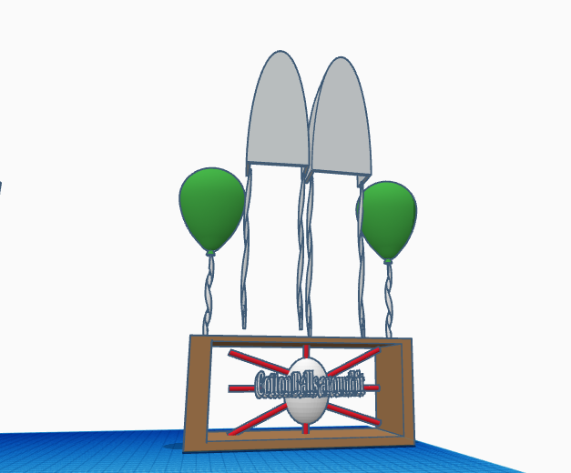
![]()